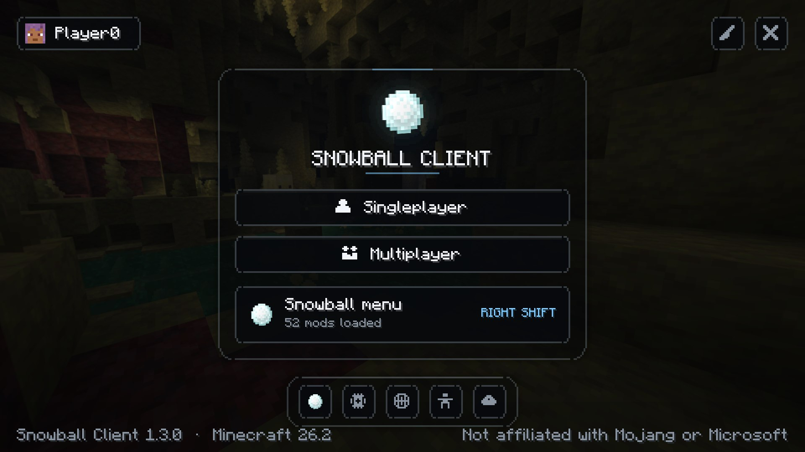
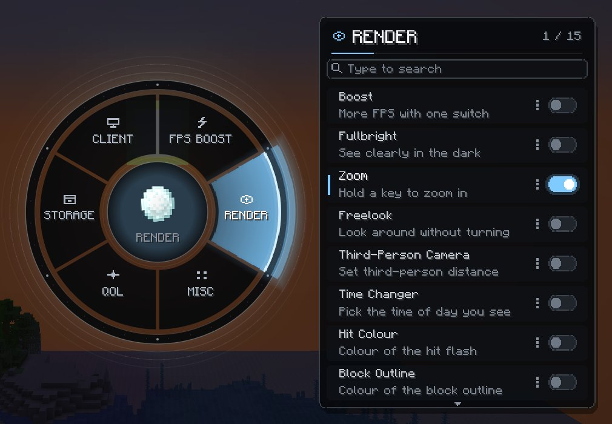
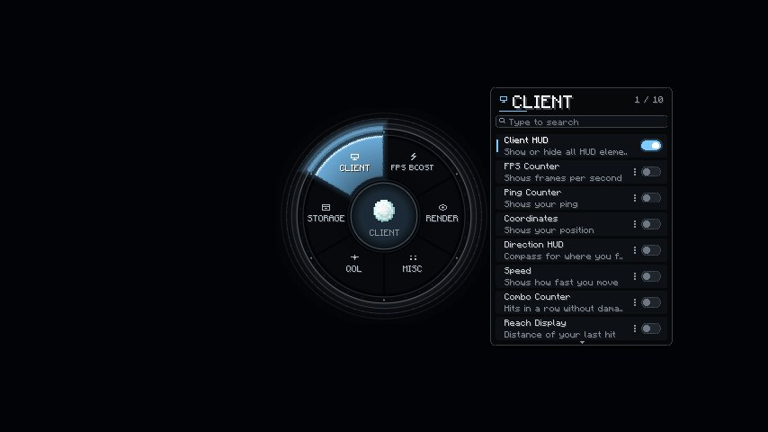
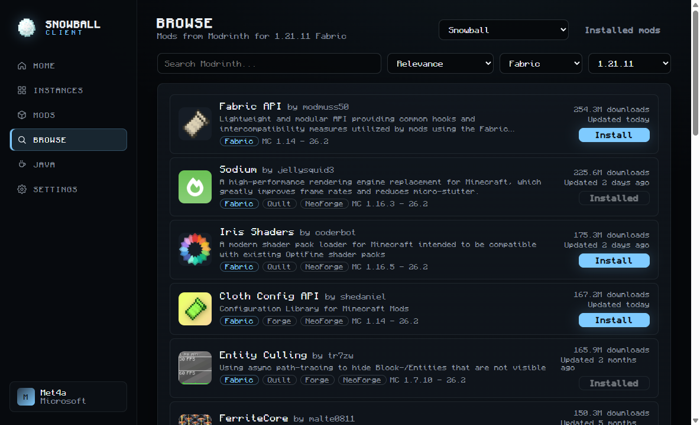

SNOWBALL CLIENT
A fast, clean Minecraft: Java Edition launcher and client. Your own main menu, a radial in-game menu, isolated instances, and a launcher that keeps itself up to date.

IN GAME
Everything one key away
Press Right Shift to open the radial menu. Pick a category, toggle a module, open its settings. Settings are saved per instance.
- CLIENT
- FPS BOOST
- RENDER
- MISC
- QOL
- STORAGE

One-click Boost
Pick Max FPS, Balanced or Quality. Boost sets your video options and installs Sodium-based mods, and switching it off restores your settings.
PvP HUD
Direction compass, speed, combo counter, reach display, memory and pack display, all movable and scalable.
Visual tweaks
Hit colour, block outline colour, low fire, no hurt shake and a time changer that only changes your sky.
Chat upgrades
Repeated messages stack as (x3), mentions of your name light up, right-click copies a line, and Nick Hider keeps your name off stream.
Camera
Hold-to-zoom with a zoom level readout, Freelook, Snaplook and a smooth third-person distance.
Keystrokes and waypoints
Keys, clicks per second, toggle sprint, and waypoints with on-screen markers.
Search everything
Start typing in the menu to find any module. Every row explains what it does in a few words.
Profiles and packs
Save module setups, switch mod sets, browse screenshots, peek inside shulker boxes and search chests.
EZ Pots
Hear a potion before it drops. Every effect gets its own sound, pitch and warning times, so Strength and Speed never sound the same.
Discord presence
Show what you are up to, with the server read from the game itself so nobody can fake where they are playing.
Snowball loading screen
The red Mojang screen becomes a Snowball one, with a real progress bar while the game loads.
Snowball in the player list
Players on Snowball Client get a snowball next to their name when you hold Tab.
Your own main menu
The title screen becomes the Snowball menu: your account, Singleplayer, Multiplayer and quick buttons for the game's own screens, over Minecraft's own panorama. Switch it off any time.
1.8.9
The same client on old Minecraft
PvP still lives on 1.8.9, so Snowball Client runs there too. Create a Fabric instance for 1.8.9 and the launcher sets up Legacy Fabric, the API and the client for you.
- The same menus, the same modules and the same config files as on 1.21.11 and 26.2
- Nothing to install by hand: Legacy Fabric, its API and Java are handled for you
- Your settings follow you between versions, because they are stored the same way

LAUNCHER
Instances that never conflict
Each instance has its own version, mods, worlds and settings, so your PvP setup never breaks your modpack.
- Updates itself: new versions arrive in the background and install when you restart, so you never run an installer again
- Escaping another launcher? Import instances, mods, worlds and settings from Modrinth, CurseForge, Prism, MultiMC, ATLauncher, GDLauncher or the official launcher
- Check mods: every jar is read on your computer and told back to you in plain language - what it can run, read or send
- Snowball Client built in: loaded by the launcher, never a mod file you can lose, checked and repaired before every launch
- Readable activity log: see each step, from checking files to joining a world, with the full game log one click away
- Starts fast: game files are checked once and trusted while they stay untouched, so pressing Play starts the game instead of re-checking thousands of files
- Built-in mod browser: search Modrinth and install in one click, dependencies included
- Always the right version for your instance's Minecraft version and loader
- One-click mod updates, and Fabric API added to new Fabric instances
- Tells you what is missing: "this mod needs Sodium to run", with a one-click install
- Fabric, Quilt, Forge and NeoForge installed for you
- Java handled automatically, or pick your own per instance
- Mod manager that catches duplicates and version conflicts
- Microsoft sign-in on Microsoft's own login page
- Crash detection and live game logs

TRY IT
Play with the menu
This is the Snowball Client menu, running in your browser. Pick a category, switch modules on and off and watch the HUD change. Start typing to search.
A live preview of the in-game menu. In Minecraft, press Right Shift to open it.
GET STARTED
Playing in three steps
- 1
Download
Grab the installer or the portable version below.
- 2
Sign in
Use your Microsoft account on Microsoft's own login page.
- 3
Press Play
The launcher downloads Minecraft, Java and your mods for you.
DOWNLOAD
Get Snowball Client
Version 1.6.2 for Windows 10 and 11 (64-bit), with Snowball Client for Minecraft 1.8.9, 1.21.11 and 26.2. You need a Microsoft account that owns Minecraft: Java Edition.
Windows may show "Windows protected your PC" because the app is new and not yet code-signed. Choose More info, then Run anyway.
Microsoft Edge blocked the download?
Edge and SmartScreen hold back files that few people have downloaded yet. It is not a virus warning, and here is how to get past it:
- Open Edge's Downloads list (Ctrl+J) and find Snowball Client.
- Click the three dots next to it, then Keep.
- If Edge asks again, choose Show more, then Keep anyway.
- Still refusing? Take the zip above instead - browsers treat it far more kindly.
You can always check the file against the SHA-256 checksums below before running it.
SHA-256 checksums
- SnowballClient-1.6.2-setup.exe
- 2bedfc7e950fbe06c34f2a850682f4f2e226e387d5666055703f3b97e2e7eafc
- SnowballClient-1.6.2-portable.exe
- 5dd70fc7d5acdc6c230081778a6cf95cafc3e0f37a002f565eb381359471e06f
- SnowballClient-1.6.2-win.zip
- 62b8c92be5be94ab6803d118cb12e337c21f73e4acbfe6c08ed7634da33af3ea
FAQ
Questions
Is Snowball Client allowed on servers?
Snowball Client only adds visual, interface and quality-of-life features. It has no hacks such as X-ray, ESP, reach, aim assist or auto clickers. Some servers ban all client mods, so always follow each server's rules.
Do you see my Microsoft password?
No. You sign in on Microsoft's own page. The launcher only receives a sign-in token from Microsoft, which is encrypted on your computer and never sent to us.
Sign-in says Minecraft has not approved the launcher yet
New launchers have to be approved by Mojang before Minecraft accepts their sign-ins. Our approval request is under review. Once it is approved, sign-in starts working in the version you already have, with no update needed.
Windows says "Windows protected your PC"
This appears for new apps that are not code-signed yet. Choose More info, then Run anyway. You can compare the file with the SHA-256 checksums in the download section.
Which Minecraft versions are supported?
The launcher runs any Java Edition version. Snowball Client itself is built for Minecraft 1.8.9, 1.21.11 and 26.2, and is set up automatically when you create a Fabric instance for one of them (1.8.9 uses Legacy Fabric).
Can I add my own mods?
Yes. Each instance has its own mods folder and the Mods page shows what is installed, warns about duplicates and version conflicts, and lets you turn mods on and off.
Does it cost anything?
No. Snowball Client is free, with nothing to buy inside it. You still need to own Minecraft: Java Edition.
Microsoft Edge or Chrome blocked the download
Browsers hold back files that few people have downloaded yet. In Edge, open Downloads (Ctrl+J), click the three dots next to the file and choose Keep, then Show more and Keep anyway. Chrome hides the same choice under the arrow next to the download. If your browser will not budge, download the zip instead: browsers rarely block those.
Do I have to reinstall it for every update?
No. From 1.4.0 the launcher updates itself: a new version downloads in the background and takes over when you restart, and your instances, mods and settings are untouched. The portable build cannot replace itself, so it tells you when a new file is on the website.
How do I move over from another launcher?
Open Instances and choose Import from another launcher. Snowball looks for Modrinth, CurseForge, Prism, MultiMC, ATLauncher, GDLauncher and the official launcher, and copies the instance you pick: mods, settings, resource packs, shader packs and worlds. Nothing is moved or deleted, so your old launcher keeps working exactly as it did.
How do I know a mod is safe?
The Mods page has a Check mods button. Every jar is read on your computer and reported in plain language: whether it can run programs, read your Discord or browser folders, reach your Minecraft session, or send data to a webhook. Nothing is uploaded anywhere, and the report always shows which file matched so you can judge for yourself.
Will a performance profile install mods I did not ask for?
No. Profiles use the optimisation mods your instance already has and skip the rest, so picking one never downloads anything. If you would rather Snowball fetched them for you, turn on "Install optimisation mods" in Settings.
What does it do to my computer?
It keeps everything in one folder (Settings shows you where), downloads Minecraft, Java and the mods you ask for, and writes nothing to the registry beyond what the installer needs for its own shortcut and uninstaller. Uninstalling removes the app; your instances stay until you delete that folder.
Does Snowball Client collect anything about me?
No accounts, no tracking and no telemetry. Sign-in happens on Microsoft's own page, the token is encrypted by Windows on your computer, and logs stay on your disk with tokens redacted.
Can I use it with shaders?
Yes. Install Iris and Sodium in the instance (the mod browser has both) and your shader packs work as usual. Snowball Client's own features are drawn on top and do not replace the renderer.
Is 1.8.9 really the same client?
Yes. The same menus, modules, HUD and config files, built against Legacy Fabric for 1.8.9. The launcher sets up the loader, the API and the right Java version when you create the instance.
Something broke. Where do I look?
The Home page shows a readable activity log while the game starts, with the full technical log one tab away, and Settings has a button that opens the launcher's log folder. Crashes open a window with the crash report path.